Computer Vision III (IN2375) — Notes 3: Image Segmentation
本文笔记中英混杂，因为期末考试纯英文方便记忆，解释部分用中文方便理解
We again build up from classical methods to deep learning. Segmentation begins as a grouping problem: superpixels and clustering — k-means, spectral clustering, mean shift — leading to normalized cuts, and then to energy-based models such as CRFs. Deep learning enters with the fully convolutional network (FCN) and 1×1 convolutions; the difficulties of dense pixel-level prediction are addressed by dilated convolutions and upsampling. From semantic segmentation we move to instance segmentation with Mask R-CNN, whose RoI rounding problem motivates coordinate-based networks such as PointRend. Panoptic segmentation unifies the two tasks — Panoptic FPN, Panoptic FCN, and how panoptic quality is evaluated. Finally, video object segmentation (VOS): one-shot (semi-supervised) versus zero-shot (unsupervised) settings; motion-based VOS built on optical flow (FlowNet, correlation layers, SegFlow); appearance-only VOS (OSVOS, OnAVOS, MaskTrack); and metric-based approaches that cast VOS as pixel-wise retrieval.
1. Segmentation as grouping
Task definition：给每个pixel打标签。输入一张 \(H \times W\) 的图，输出一张 \(H \times W\) 的label map，即一个dense prediction问题，每个像素都要 预测一个类别。
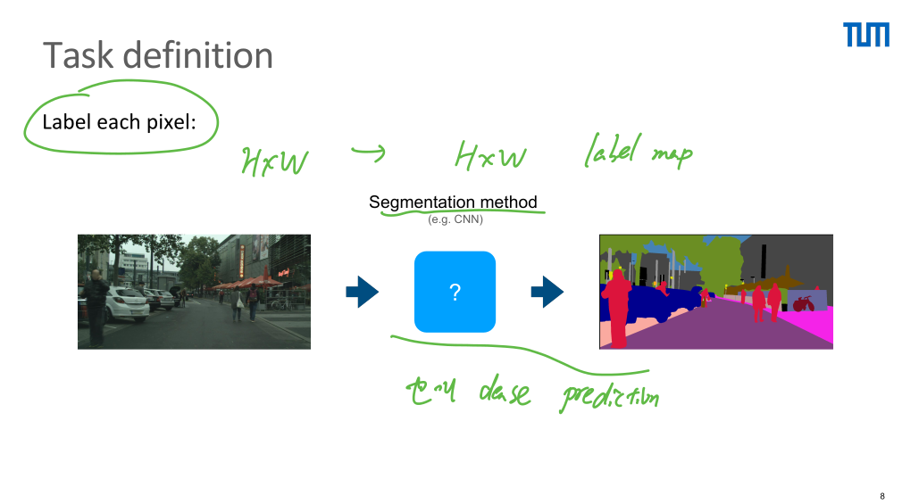
Segmentation有几种flavour，区别在于"分到什么粒度"：
- Semantic segmentation：label every pixel with a semantic category，只回答 "这个像素是哪一类"，同一类的两个物体不区分
- Instance segmentation：group object pixels as a separate category，即把 每个object单独分出来。它忽略背景（"stuff"）类比如road、sky、building， 只关心"things"。可以是class-agnostic的，也可以带上object classification， 后者叫semantic instance segmentation
- Panoptic segmentation：semantic + instance，既分stuff又分things
- 更高granularity：part segmentation，比如把person再分成head、arm、leg， 通常只针对一个物体
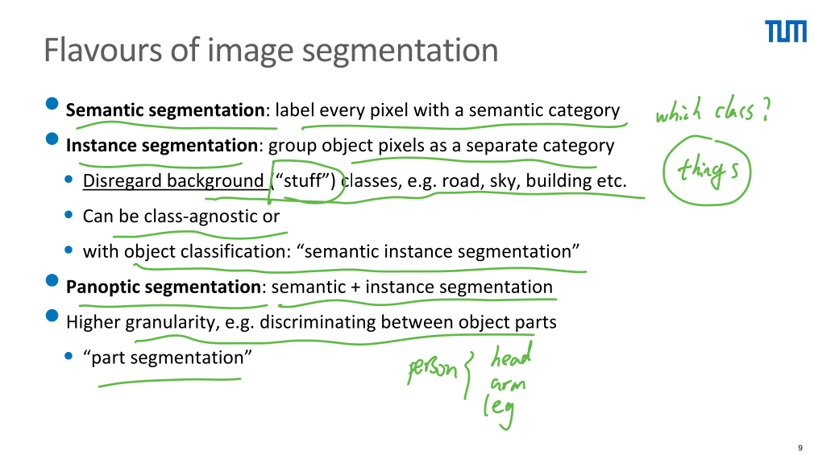
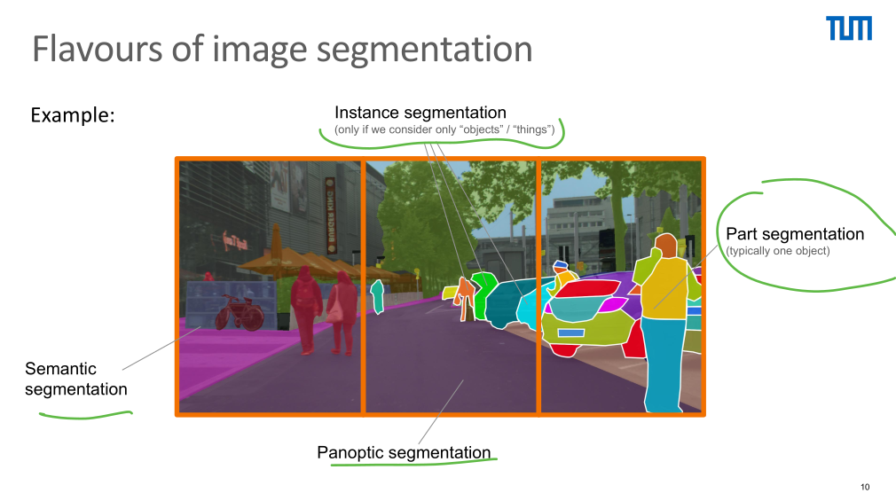
这一章的路线和前两章一样，从classical方法一路走到deep learning：
- Clustering：k-means、spectral clustering、mean shift （Comaniciu and Meer, 2002）等
- Normalised cuts（Ncut）
- Energy-based models：Conditional Random Fields（CRFs）
- Deep learning：fully convolutional networks
1.1 Superpixels
Superpixel是local class-agnostic pixel grouping，即把一组局部相似的 像素聚成一个小块，不关心它属于什么类别。下图（Mori et al., 2004）展示了一条 经典pipeline：先在两个scale上做Canny edge找到edge pixels，再得到boundaries， 最后用Ncut切出superpixels。
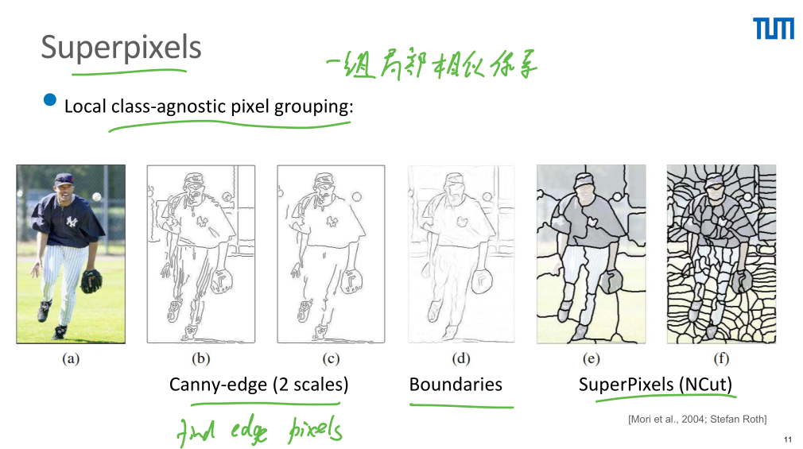
Superpixel的意义在于，后续的处理单元从几十万个像素变成几百个小块，而且这些 小块基本贴合物体边界，所以后面的clustering或CRF都可以建立在superpixel上。
1.2 Clustering: k-means and spectral clustering
k-means
最直接的想法是把segmentation当成clustering。K-means的四步：
- 随机初始化K个cluster centres
- 用一个distance metric把每个点分配给最近的cluster： \(c_i = \arg\min_k \|x_i - \mu_k\|^2\)
- 用cluster内所有点的平均更新centre：\(\mu_k = \frac{1}{|C_k|}\sum_{i \in C_k} x_i\)
- 重复2和3直到收敛
整体优化的目标是
即让每个cluster里的点尽量靠近自己的centre。
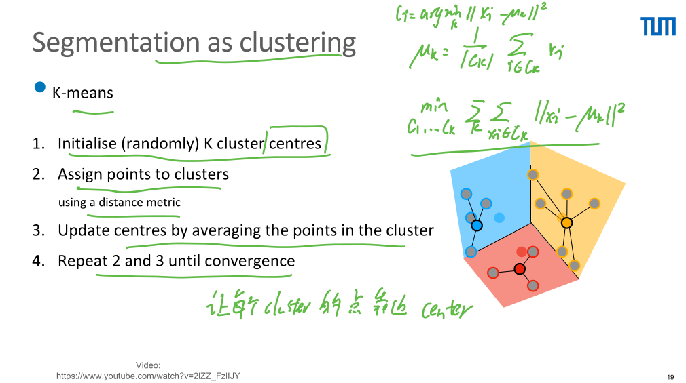
它总是work吗？ 不。K-means只看点到centroid的Euclidean distance，所以它 假设cluster是compact / spherical的。下面这个two-moons的例子里两个cluster是 non-convex的，Euclidean distance alone is insufficient，我们真正想要的是基于 connectedness来cluster。
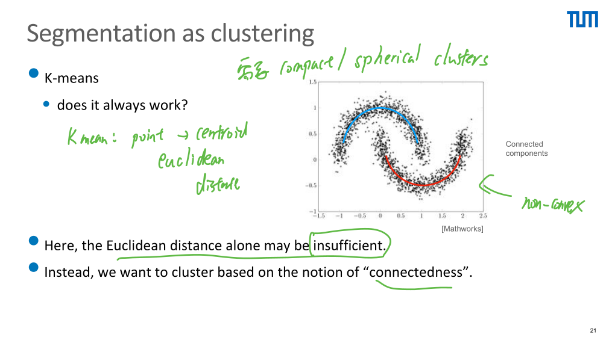
Spectral clustering
把所有data points表示成一个fully connected undirected graph，edge weights encode proximity。定义affinity matrix
\(a_{i,j}\)衡量node \(i\)和\(j\)的similarity，可以由一个distance metric得到：
距离越大，\(a_{i,j}\)越接近0，similarity越低；距离为0时\(a_{i,j} = e^0 = 1\)。
Quiz: \(\mathbf{A}\)对称吗？ 只要\(d(i,j) = d(j,i)\)，\(\mathbf{A}\)就是对称的， undirected graph正是这种情况。如果是有向图，\(i \to j\)和\(j \to i\)的权重可能 不同，\(\mathbf{A}\)就不对称。
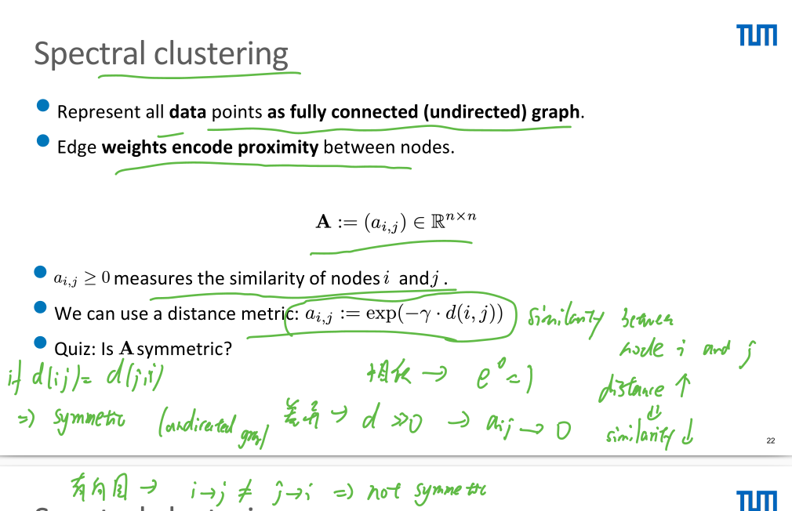
接着定义graph Laplacian
其中\(D\)是对角的degree matrix。对unweighted graph，\(D_{ii}\)就是node \(i\)连 出去的边数；在spectral clustering里\(A_{ij}\)是similarity，所以\(D_{ii}\)是node \(i\)的total connection strength。
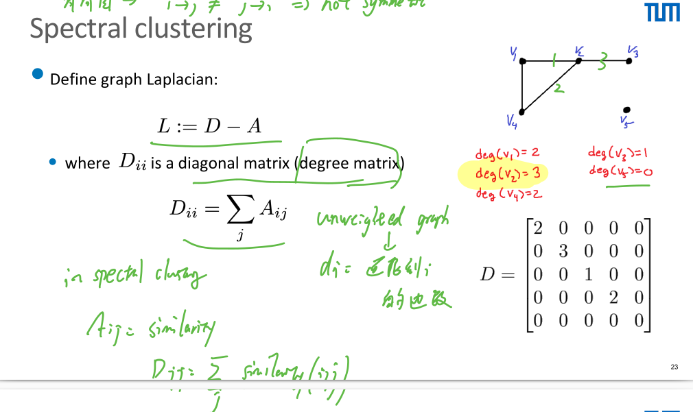
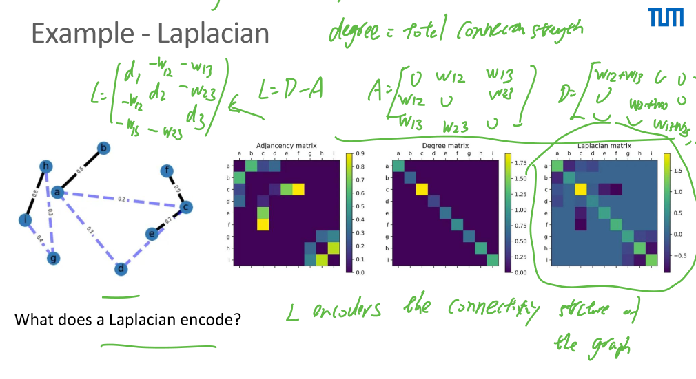
Laplacian encode了什么？ 它encode了graph的connectivity structure。写开来看
即当前值减去邻居的加权平均值：applying the Laplacian to a function returns how far that value is from the neighbourhood average，这是一种smoothness的度量。 在1D line graph上\((Lf)_i = 2\left(f_i - \frac{f_{i-1} + f_{i+1}}{2}\right)\)， 所以Laplacian等价于second derivative：\(\Delta f = \sum_i \frac{\partial^2 f}{\partial x_i^2}\)。
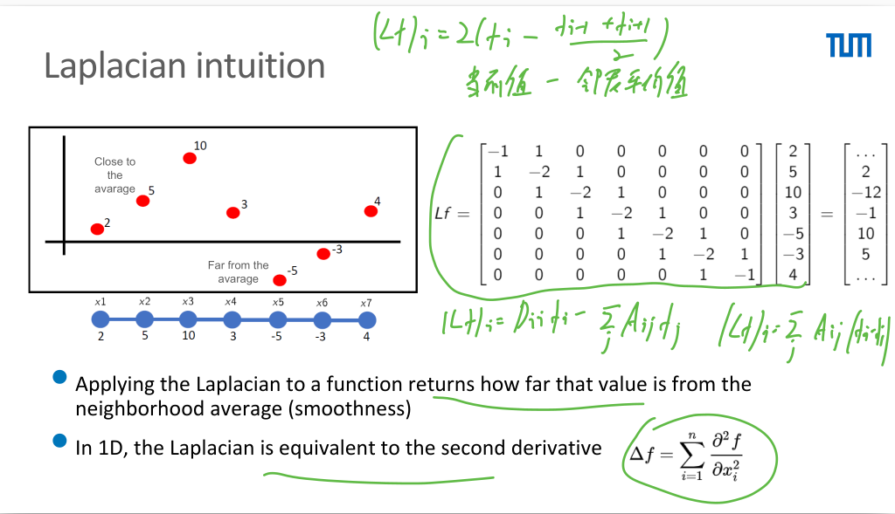
\(L\)是symmetric and positive semi-definite的，因为可以证明
这个量叫Dirichlet energy或graph smoothness energy，由此所有eigenvalue \(\lambda_i \ge 0\)。我们感兴趣的解是
约束\(\|\mathbf{x}\| = 1\)是为了排除\(\mathbf{x} = 0\)这个trivial解。
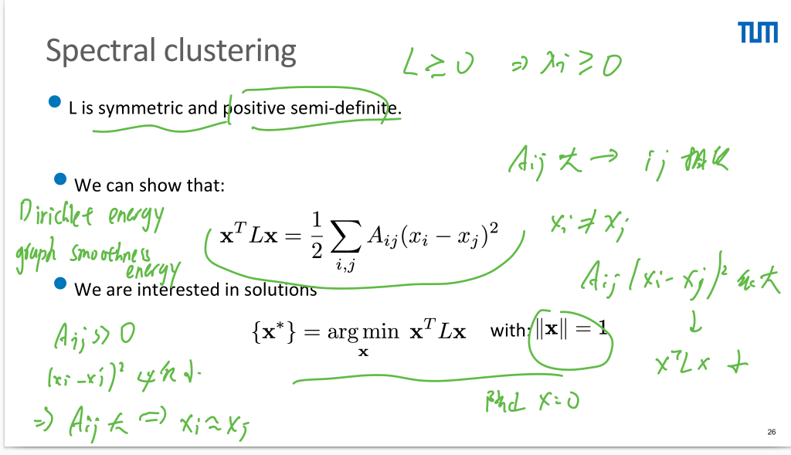
直觉上，要让\(\frac{1}{2}\sum A_{ij}(x_i - x_j)^2 \approx 0\)，需要：
- 如果\(x_i \ne x_j\)（\(i\)和\(j\)在不同cluster），那么\(A_{ij} \approx 0\)（no similarity）
- 如果\(A_{ij} > 0\)（\(i\)和\(j\)相似），那么\(x_i \approx x_j\)（same cluster）
所以\(\mathbf{x}\)本身就是一种"cluster assignment"。用Lagrange multiplier正式推导：
所以解是\(L\)的最小eigenvalue对应的eigenvectors。
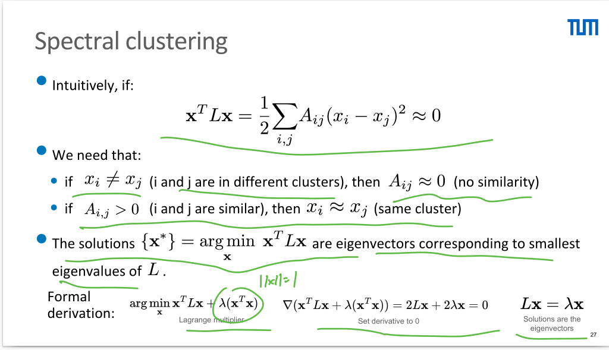
Special case (I): zero eigenvalue。\(\mathbf{x}^T L \mathbf{x} = 0\)意味着所有 相连的\(x_i = x_j\)，常数向量（all-ones）永远满足，所以\(\lambda = 0\)一定是\(L\)的 一个eigenvalue，对应的eigenvector是常数向量。
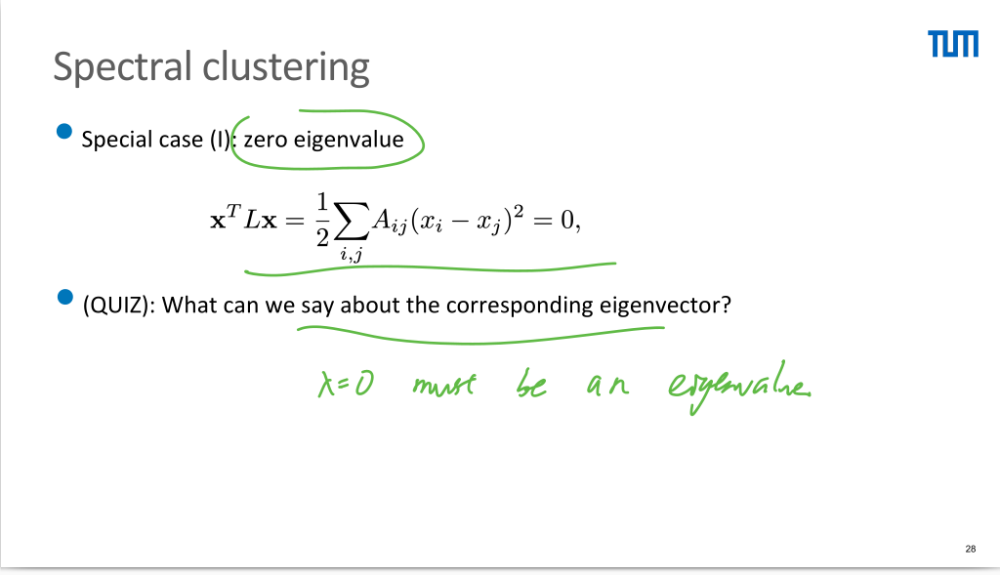
Special case (II): connected components。Proposition：eigenvalue 0的 multiplicity \(k\)等于graph的connected components数量，对应的eigenspace由各个 component的indicator vectors张成。也就是说$\dim \ker L = $ 连通分量数。理由： graph有disconnected components时，\(A\)、\(D\)、\(L\)都是diagonal block结构
而block-diagonal矩阵的eigenvectors是各个block eigenvectors的union，每个block 贡献一个\(\lambda = 0\)的常数（indicator）向量。整个pipeline是：pixel当nodes， similarity\((i,j)\)当\(A_{ij}\)，算\(D\)和\(L = D - A\)，对\(L\)做eigendecomposition \(L u = \lambda u\)。
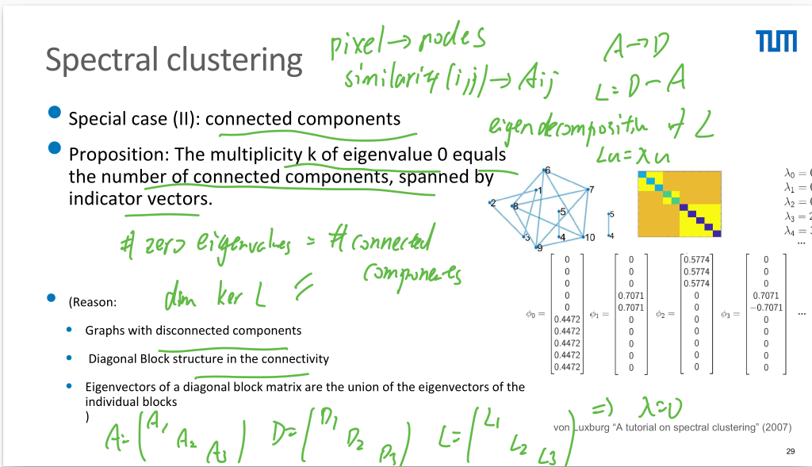
Eigenvectors长什么样？ 在1D line graph上，Laplacian的eigenvectors就是 \(\sin(kx)\)、\(\cos(kx)\)，因为它对应连续算子\(-\frac{d^2}{dx^2}\)的eigenfunctions。 小eigenvalue对应low graph frequency（\(\phi_0\)是常数，\(\phi_1\)单调），大 eigenvalue对应high graph frequency。2D grid graph上的eigenvectors就是2D Fourier modes。
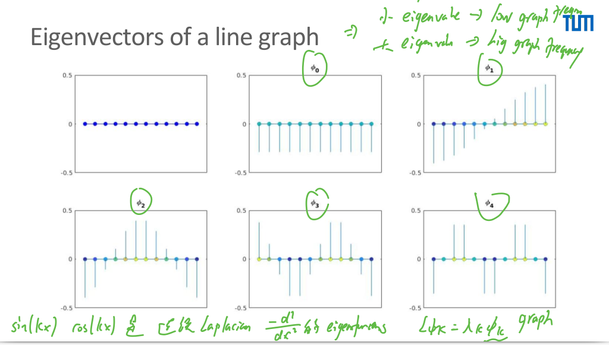
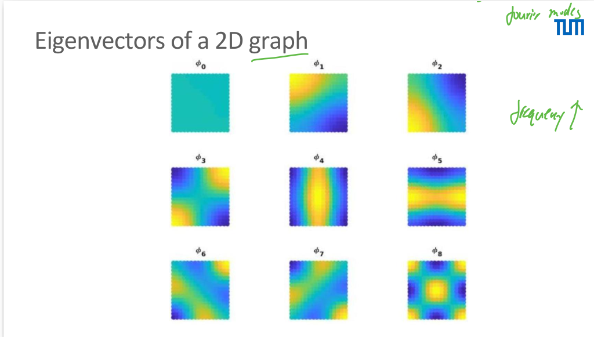
Spectral embedding：把每个node \(i\)映射到\((\phi_1(i), \phi_2(i), \dots)\)， 即用前几个eigenvectors的第\(i\)个分量作为坐标。下图里三个紧密相连的小团在 embedding空间里各自聚成一堆。
Quiz: 为什么node 9和10的spectral embedding完全一样？ 因为它们在graph里 的connectivity完全相同（连接的是同一组邻居、权重一样），交换9和10不改变 graph，所以embedding相同。
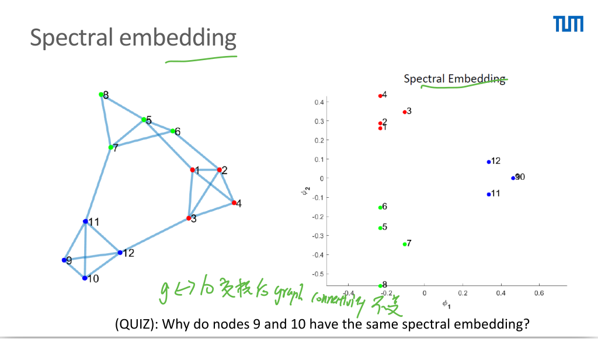
In practice（von Luxburg, "A tutorial on spectral clustering", 2007）：
- 由\(A\)、\(D\)得到\(L\)，计算\(L\)的前\(k\)个（最小eigenvalue的）eigenvectors \(u_1, \dots, u_k\)
- 令\(U \in \mathbb{R}^{n \times k}\)以它们为列
- 对\(i = 1, \dots, n\)，取\(U\)的第\(i\)行\(y_i \in \mathbb{R}^k\)作为node \(i\)的 spectral coordinates
- 在\(\mathbb{R}^k\)里对\((y_i)\)做k-means，得到clusters \(C_1, \dots, C_k\)
- 输出\(A_i = \{j \mid y_j \in C_i\}\)
这样two-moons在Euclidean geometry里分不开，但经过graph connectivity的 变换之后，同一个弯内部strongly connected、两个弯之间weakly connected， 在spectral coordinates里就变成了两团可分的点。
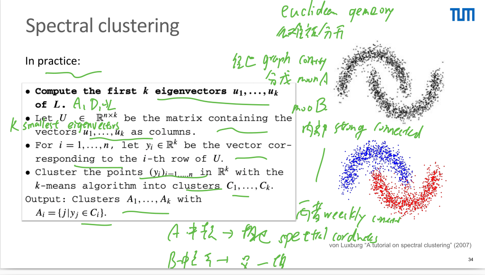
First (Fiedler) eigenvalue：对connected graph，\(\lambda_0 = 0\)，真正有 信息的是\(\lambda_1\)，叫Fiedler value或algebraic connectivity，对应的 eigenvector叫Fiedler vector。\(\lambda_1\)表示graph有多connected： \(\lambda_1 \approx 0\)说明graph几乎能被切成两半，\(\lambda_1\)越大说明 connectivity越强、越难切开。
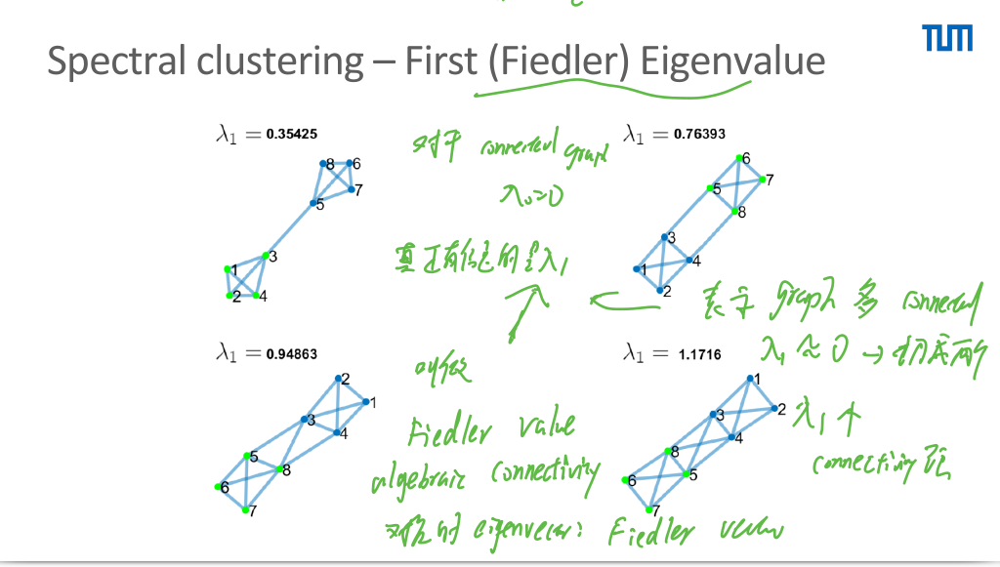
同样的思路可以直接用在3D shape segmentation上：mesh的vertex当graph node， mesh edges给出connectivity，算出\(\phi_1, \dots, \phi_5\)之后在这个feature space里做k-means。
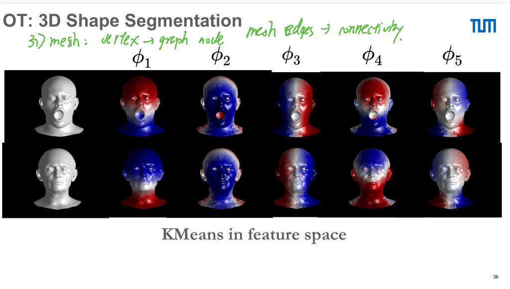
Summary of spectral clustering：
- 能处理complex distributions
- 复杂度是\(O(n^3)\)，因为要做eigendecomposition
- 有efficient variants，比如用sparse affinity matrices
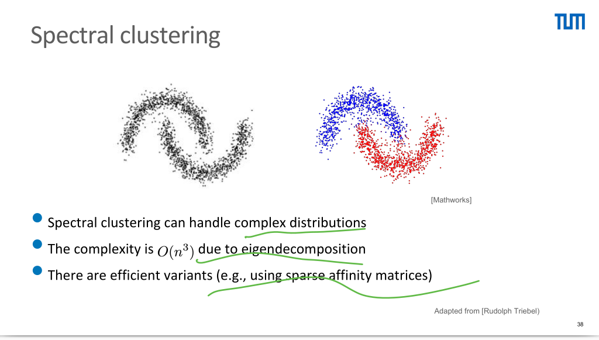
1.3 Normalized cuts
Normalised cut（Ncut）把spectral clustering看成一个min cut问题。 把image变成graph \(G = (V, E)\)：\(V\)是nodes（pixel或superpixel），\(E\)是edges， edge weight \(w_{ij}\)是\(i\)、\(j\)的similarity，比如\(w_{ij} = \exp(-\gamma d(i,j))\)。 目标是把\(V\)切成两部分\(A \cup B = V\)、\(A \cap B = \emptyset\)，切断的边尽量"便宜"。
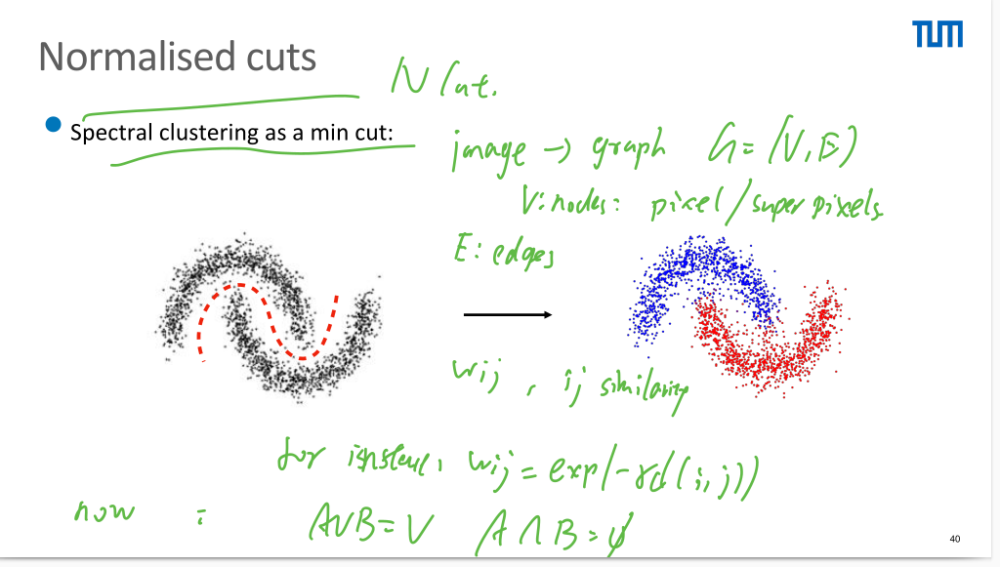
Min cut的问题：定义\(\text{cut}(A, B) = \sum_{i \in A, j \in B} w_{ij}\)， 直接最小化它会偏向切出unbalanced的孤立小cluster。下图里把角落的一两个点 单独切出去（min-cut 1、min-cut 2）比中间那条"better cut"便宜得多，因为 孤立点连出去的边本来就少。所以raw min-cut会产生很不平衡的partition。
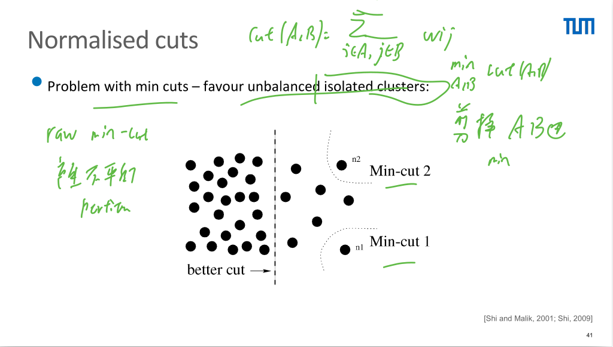
Balanced cut：Shi and Malik（2000）提出的Ncut用两边的"体积"做归一化
其中\(\text{cut}(A, B) = \sum_{i \in A, j \in B} w_{ij}\)是切开\(A\)、\(B\)的代价， \(\text{assoc}(A, V) = \sum_{i \in A, j \in V} w_{ij}\)是\(A\)中所有点和整个graph 的总连接强度，也叫\(\text{vol}(A)\)。直觉上是minimise the similarity between groups A and B, while maximising the similarity within each group：分子是 between-cluster similarity要小，分母是within-cluster similarity要大。如果\(A\) 只有一个孤立点，\(\text{assoc}(A, V)\)很小，\(\text{assoc}^{-1}\)就很大，这种cut 会被惩罚。
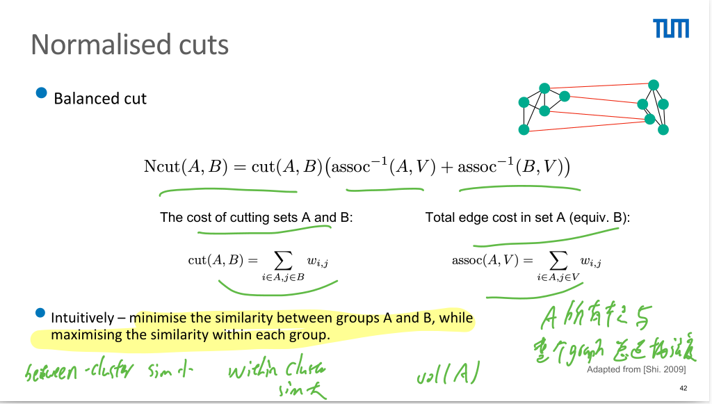
Ncut算法（Shi and Malik, 2001; Shi, 2009）：
- 定义graph \(G := (V, E)\)，\(V\)是代表pixel的nodes，\(E\)定义两个node的similarity， \(W = [w_{ij}]\)就是前面的\(A\)，\(d(i) = \sum_j w_{ij}\)，Laplacian \(L = D - W\)
- 解一个generalised eigenvalue problem \((D - W)\mathbf{x} = \lambda D\mathbf{x}\)
- 用第二小eigenvalue对应的eigenvector来切graph
- 需要的话递归，即继续subdivide切出来的两组node
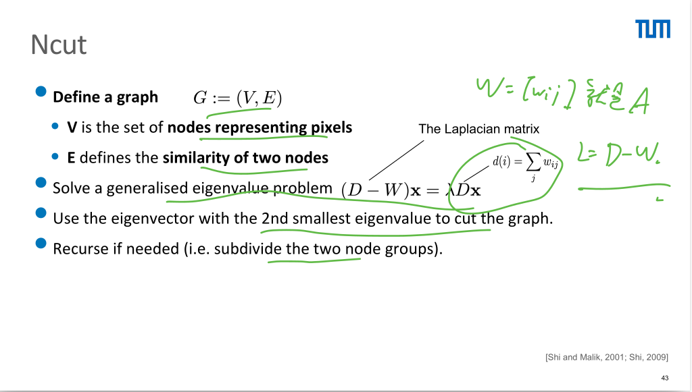
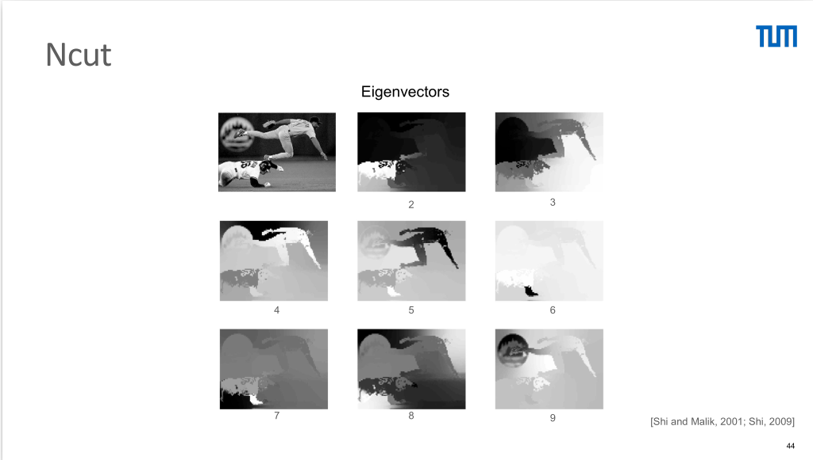
为什么是generalised eigenvalue problem？ 它等价于最小化 \(\frac{\mathbf{x}^T L \mathbf{x}}{\mathbf{x}^T D \mathbf{x}}\)，分母\(\mathbf{x}^T D \mathbf{x}\) 是partition的graph volume，即把上面的Ncut归一化写成了Rayleigh quotient的形式。 从\(L\mathbf{x} = \lambda D\mathbf{x}\)可以等价地写成
这里\(L_{\text{sym}} = I - D^{-\frac{1}{2}} W D^{-\frac{1}{2}}\)叫symmetric normalised Laplacian，所以Ncut就是normalised spectral clustering：它关注 的是relative connectivity，而不是absolute connectivity。
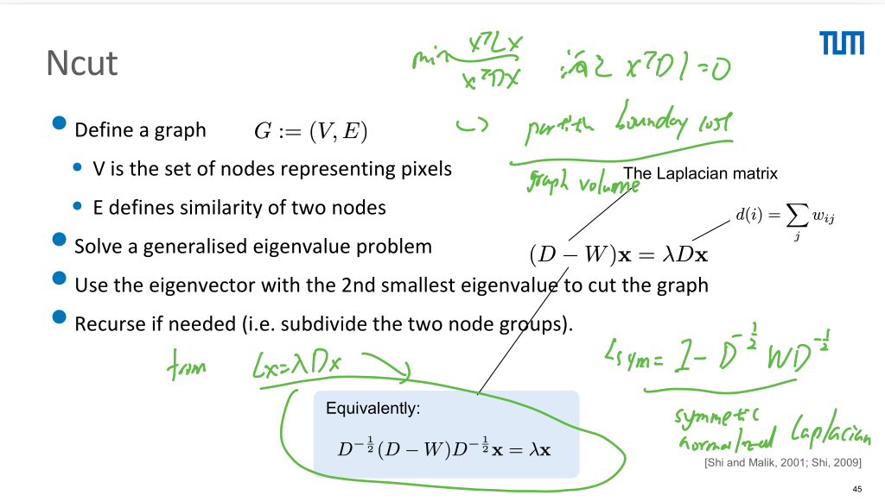
Quiz: 为什么用second smallest eigenvector？ 因为\(\lambda_0 = 0\)对应的 eigenvector是常数向量，它给出的是trivial partition（所有点在一组）。第二个 eigenvector是smoothest non-trivial partition，正是我们要的Fiedler vector。 更多细节见Shi and Malik（2000）的Sec. 2.1。
2. Energy-based models: CRFs
Conditional Random Field（CRF）把segmentation写成一个energy minimisation 问题。以Boykov and Jolly（2001）的interactive segmentation为例：
- Variables：\(x_i\)是binary variable（foreground / background），\(y_i\)是 annotation（foreground / background / empty，即用户画的涂鸦）
- Unary term \(\varphi(x_i, y_i) = K[x_i \ne y_i]\)：如果预测和annotation 不一致就付出penalty \(K\)，一致时为0。它保证不会无视用户的标注
- Pairwise term \(\psi(x_i, x_j) = [x_i \ne x_j]\, w_{ij}\)：\(w_{ij}\)是pixel \(i\)、\(j\)的affinity。相邻pixel label相同时\(\psi = 0\)；label不同时付出\(w_{ij}\)， 如果两个像素很相似（\(w_{ij} \gg 0\)）却被分开，penalty很大。这一项鼓励 smooth annotations，即让边界落在affinity低的地方
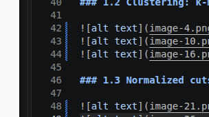
Energy minimisation with graph cuts：构造一个graph，source \(S\)是object terminal，sink \(T\)是background terminal。每个pixel和\(S\)、\(T\)之间的T-links 承载unary cost，相邻pixel之间的N-links承载pairwise cost。根据max-flow min-cut theorem（the maximum value of an s-t flow is equal to the minimum capacity over all s-t cuts），最小化\(E\)等价于找minimum s-t cut，而max-flow 有多项式时间算法，所以对binary labelling可以求全局最优。
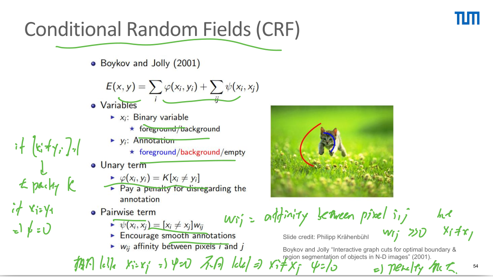
从概率的角度看，给定image \(x\)，segmentation \(y\)的分布是
\(Z\)是partition function。Energy越低，概率越高，所以 \(\arg\max_y P(y \mid x) = \arg\min_y E(x, y)\)。
两类CRF：
- Grid structured random fields：每个pixel只和邻居有edge（sparse graph）。 用Maxflow/Mincut有efficient solution，对binary labelling是optimal的 （Boykov & Kolmogorov, 2004），复杂度大约\(O(n)\)
- Fully connected models：每个pixel和其他所有pixel都有edge，直接做是 \(O(n^2)\)。Krähenbühl & Koltun（2011）用mean-field approximation做 efficient inference（属于variational methods，在CV I里讲过）。它的pairwise potential是Gaussian edge potentials：
第一个kernel同时看position和colour，叫bilateral kernel，让颜色相近且位置 相近的像素倾向于同一label；第二个kernel只看position，负责smoothness。
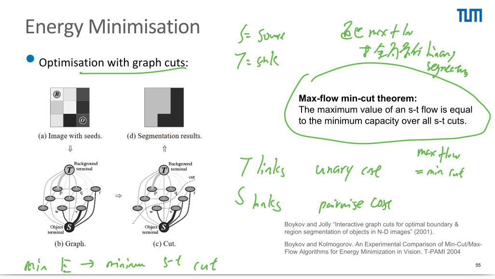
Remark：
- "Classical"方法今天仍然高度相关，比如作为postprocessing或loss function
- Deep networks学到的是有用的feature representation（或metrics），学完之后 standard clustering（k-means、Ncut）仍然可以直接用
- 给每个pixel都产生deep feature是有挑战的
- Fully connected CRF是一个好用的off-the-shelf post-processing工具
一个典型例子是DeepLab（Chen et al., 2016）：DCNN输出一张coarse score map，bilinear interpolation放大回原分辨率，最后用fully connected CRF refine 边界得到final output。下图展示了fully connected CRF的mean-field迭代：0次迭代 时\(Q(\text{bird})\)和\(Q(\text{sky})\)的分布很模糊，2次迭代之后边界已经很清晰， 10次迭代后基本收敛。
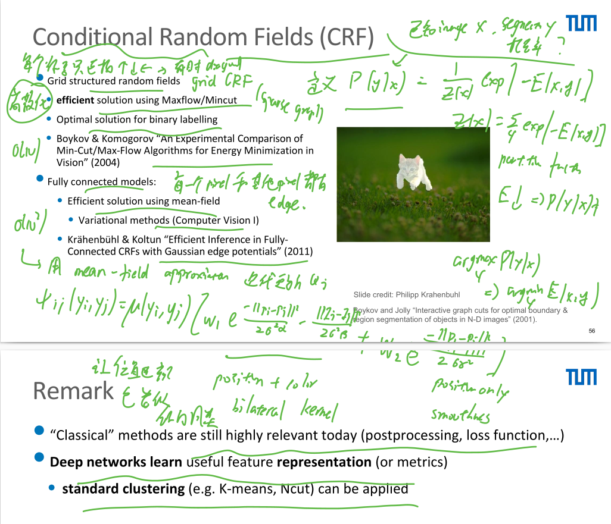
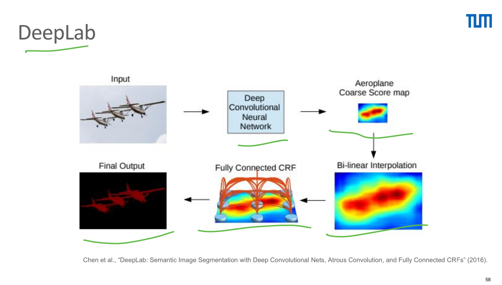
3. Deep semantic segmentation
回忆用于classification的deep network：image（\(221 \times 221 \times 3\)）经过 CNN得到feature map（\(5 \times 5 \times 1024\)），Global Average Pooling （GAP）把它平均成\(1 \times 1 \times 1024\)的feature，再经过fully connected layer（\(1024 \times\) num. classes）得到class distribution。
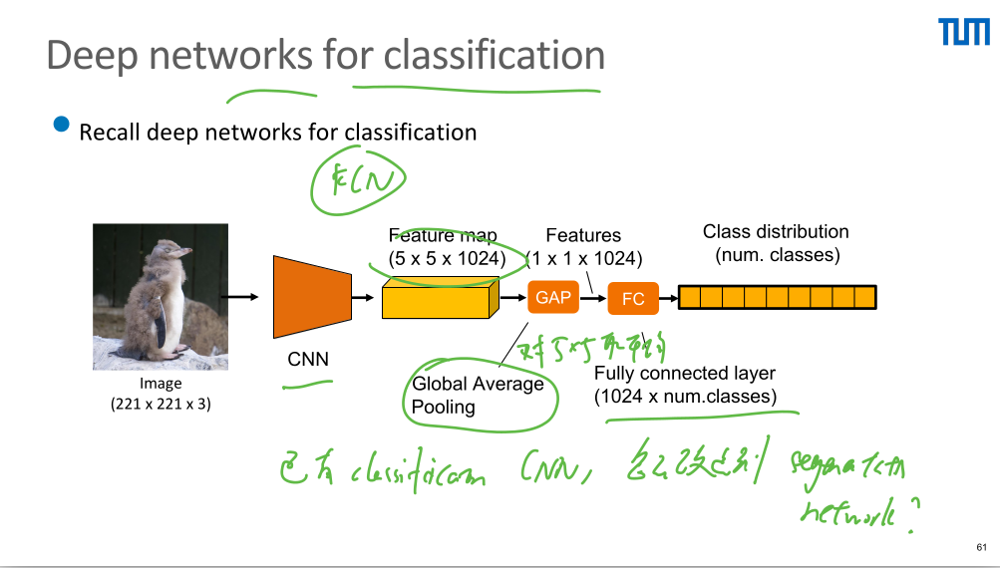
怎么把它扩展到segmentation？ 我们想要的输出是\(5 \times 5 \times\) num. classes，即每个空间位置一个class distribution。但GAP把空间信息全部平均掉了， 所以第一步是去掉GAP。
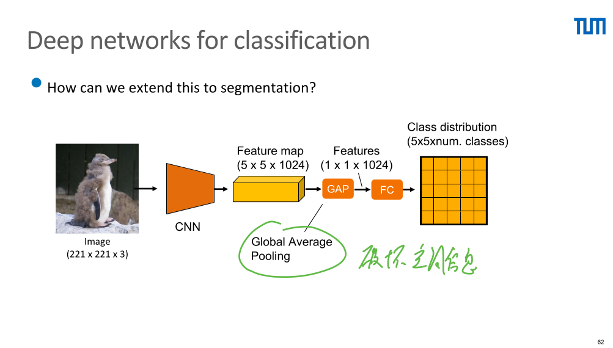
去掉GAP直接接FC layer的问题：FC的参数量是\(5 \cdot 5 \cdot 1024 \cdot (5 \cdot 5 \cdot C) = 640000\,C\)； 输入size被固定住了，因为FC的输入维度写死了；而且没有translation invariance。
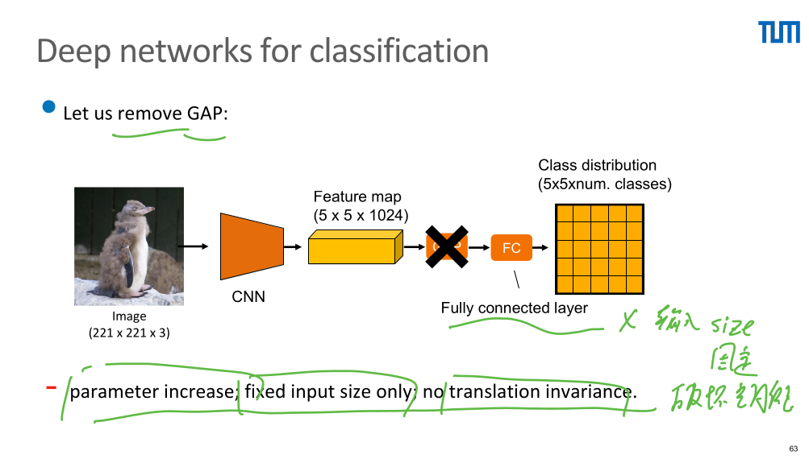
Replace fully connected layer with convolution：用1×1 convolution 代替FC。
Quiz: 现在有多少参数？ 输出\(C\)个channel，每个filter是\(1 \times 1 \times 1024\) 再加一个bias，所以是\((1 \times 1 \times 1024)\,C + C\)，比FC少了625倍。好处是 few parameters、variable input size、translation invariance（更准确地说 conv是equivariance）。
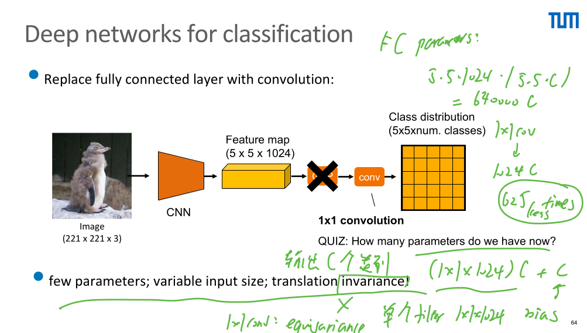
3.1 FCN and 1×1 convolutions
Fully Convolutional Network（FCN）（Long, Shelhamer, Darrell, CVPR 2015）：
- 把FC layers全部换成convolutional layers
- 把最后一层的输出upsample回original resolution，比如transposed convolution或bilinear interpolation
- 用pixelwise cross-entropy + SGD训练：\(L = -\sum_i \log p_i(y_i)\)，\(i\) 遍历每个pixel
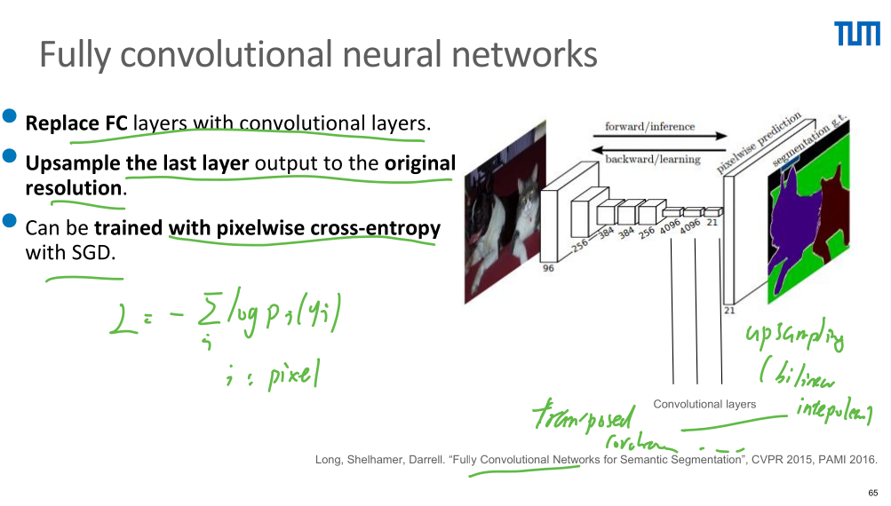
1×1 "convolution"到底是什么：每个feature pixel是一个multi-dimensional feature，1×1 conv对每个位置做\(x_i' = W x_i\)，即对每个pixel feature应用同一个 shared fully connected layer。实际上在deep learning framework里完全不需要用 conv op来实现它，虽然大家常这么写。
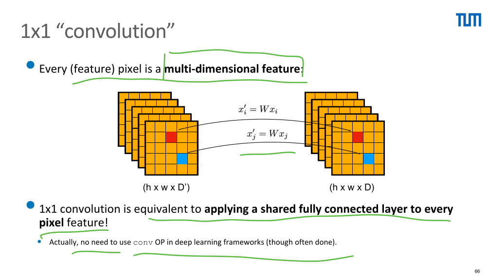
1×1 convolution facts：
- 它是一个pixel-wise linear projection：\(X' := WX\)，其中 \(X \in [D, \text{pixels}]\)，\(W \in [D', D]\)，\(X' \in [D', \text{pixels}]\)
- 每个pixel被同样对待（shared parameters），对比3×3 conv会混合邻居
- 输出和FC层一样处理：后面接normalisation和non-linearity（output layer除外）
3.2 The trouble with pixel-level prediction
Output stride = input resolution / output resolution（通常指encoder的）。 FCN论文里FCN-32s、FCN-16s、FCN-8s分别对应output stride 32、16、8，可以看到 降低output stride能提高segmentation accuracy，边界越来越贴合ground truth。
Quiz: 为什么不在所有层都保持高feature resolution？ 两个问题：
- Receptive field size：每去掉一个stride-2操作，receptive field面积就 缩小约4倍，网络能看到的context information就变少。而large receptive field 对segment large objects很重要，比如下图里要认出整辆车需要看到远超一个 patch的范围
- Computational footprint（memory和FLOPs）：每去掉一个stride-2操作， feature tensor大4倍
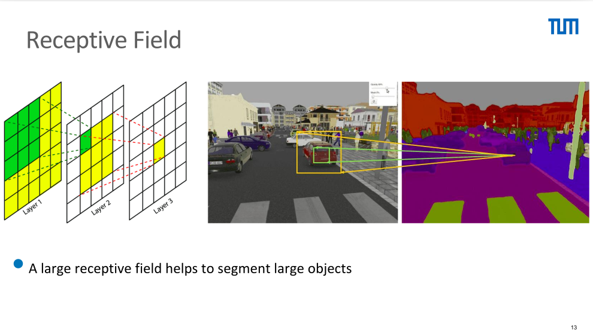
解决思路：
- 问题1：把stride-2操作换成dilation-2操作，保持receptive field不变
- 问题2：为了让计算可行，我们还是得降低feature resolution，即使receptive field不再是问题。所以需要有效的upsampling策略
3.3 Dilated convolutions and upsampling
Dilated convolutions
要保持receptive field size，一种做法是把一个stride-2操作换成多个stride-1 操作，但网络更深就更难、更贵。更好的选择是dilated convolution：用stride 1 的同时保持receptive field size。
普通convolution是dilation = 1的特例；dilation为\(N\)时kernel在相邻采样点之间 "跳过"\(N - 1\)个pixel。参数量不变，kernel size \(K\)、dilation \(D\)的receptive field是
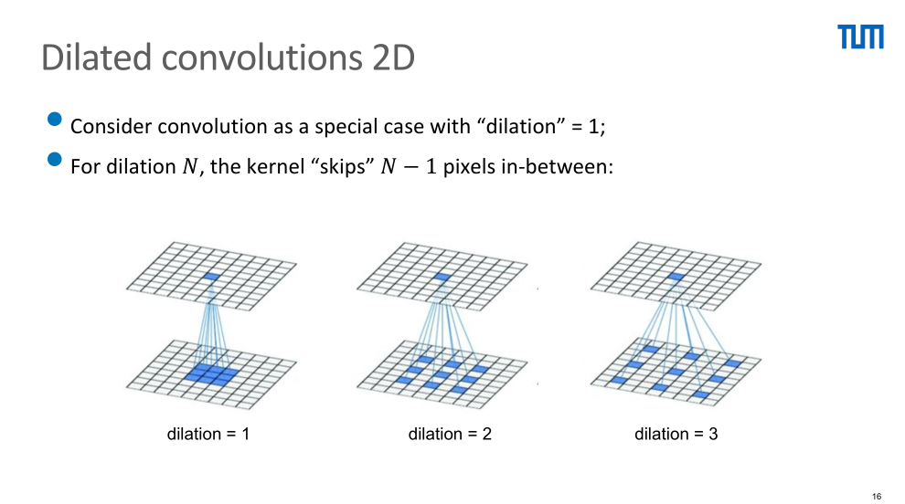
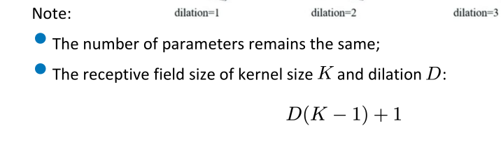
Stride 2 vs dilated（DeepLab, Chen et al., 2016）：上面一条路是 downsampling（stride 2）→ convolution（kernel 7）→ upsampling（stride 2）， 结果是模糊的低分辨率响应；下面一条路直接用atrous convolution（kernel 7， rate 2，stride 1），在全分辨率上得到同样receptive field的响应。
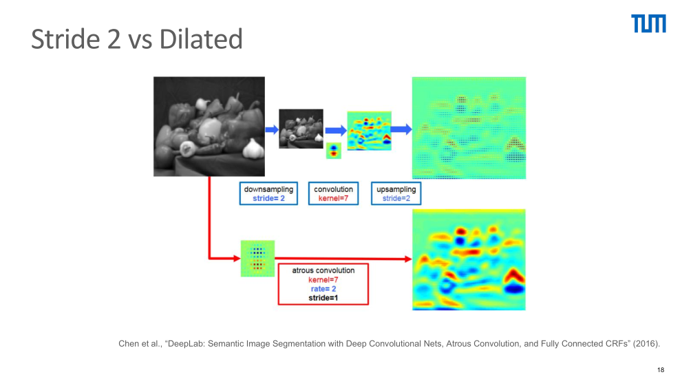
Dilation还能改善scale invariance：在同一层里用多个不同的dilation，通常 放在网络的bottleneck部分。DeepLab的ASPP（Atrous Spatial Pyramid Pooling） 就是在Pool5之后并行四个3×3 conv，rate分别是6、12、18、24，各自接1×1 conv， 最后sum-fusion。
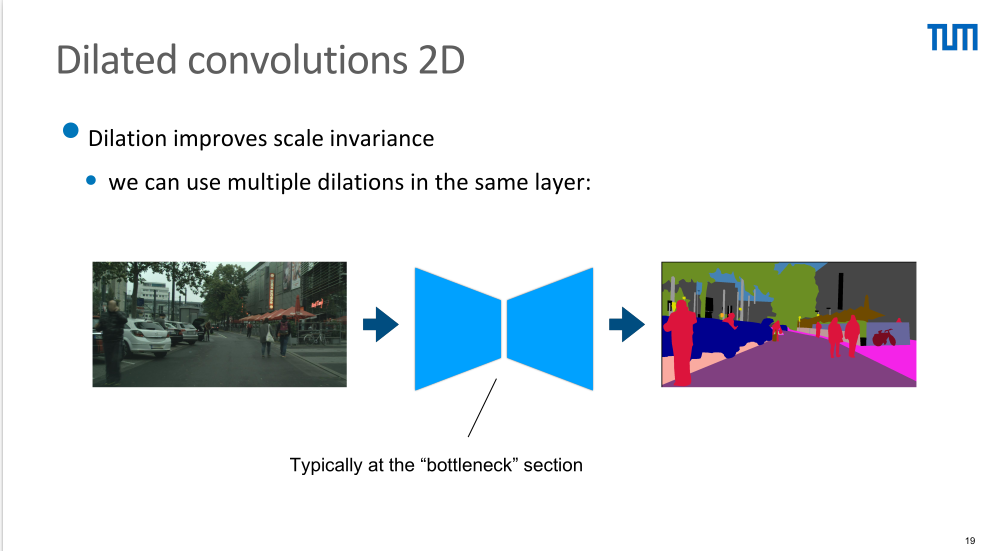
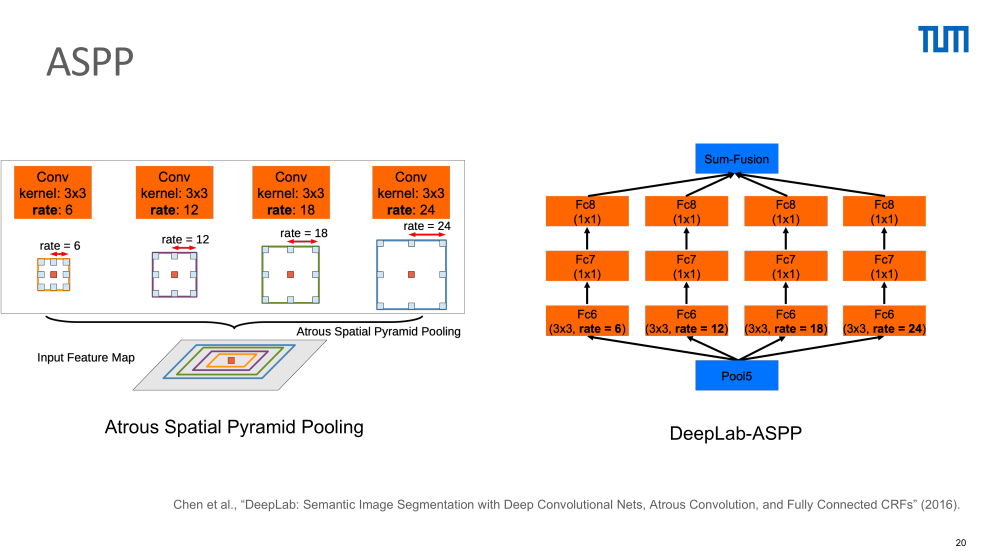
Transposed convolution
能不能用convolution来增大output resolution？ 先回忆convolution写成矩阵 乘法的形式（im2col）：把kernel拉成\([1 \times K]\)的向量，把input的每个 patch拉成列组成\([K \times n]\)的矩阵，相乘加bias得到\([1 \times n]\)，再reshape 回去。
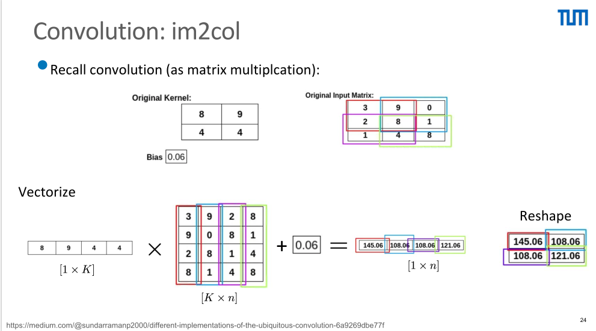
即\(X' = WX\)。反过来做\(X = W^T X'\)（\([K \times n] = [K \times 1][1 \times n]\)） 就把每个输出值"broadcast"回一个\(K\)维的patch，输出size变大，这就是 transposed convolution。
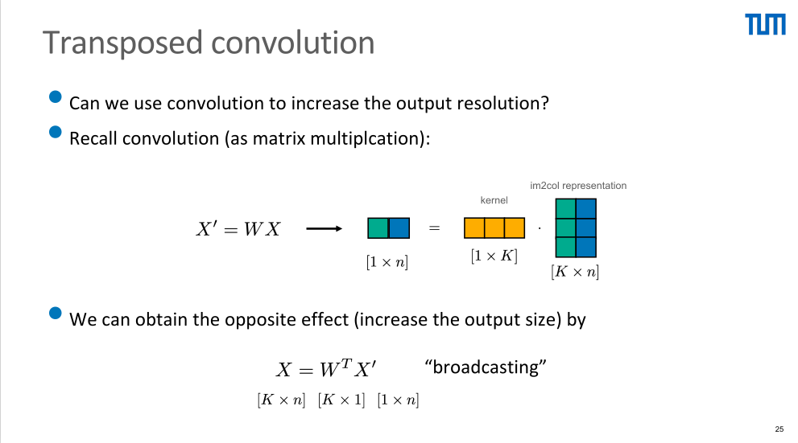
Transposed convolution也叫"up-convolution"，也有人叫"deconvolution"（这是 不准确的叫法）。实现上：给input的每个pixel周围pad（比如零），然后用一个 kernel（比如3×3）做卷积，padding和stride的量决定output resolution。比如 3×3的input可以变成5×5的output。
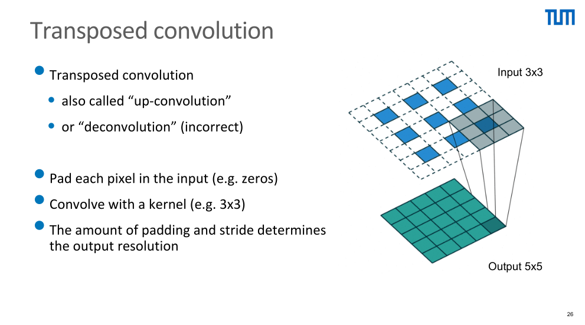
问题：checkerboard artefacts。当kernel size不能被stride整除时会出现 "uneven overlap"，比如kernel 3、stride 2，有些output位置被两个kernel覆盖， 有些只被一个覆盖，结果就是棋盘格状的纹路（distill.pub, 2016）。
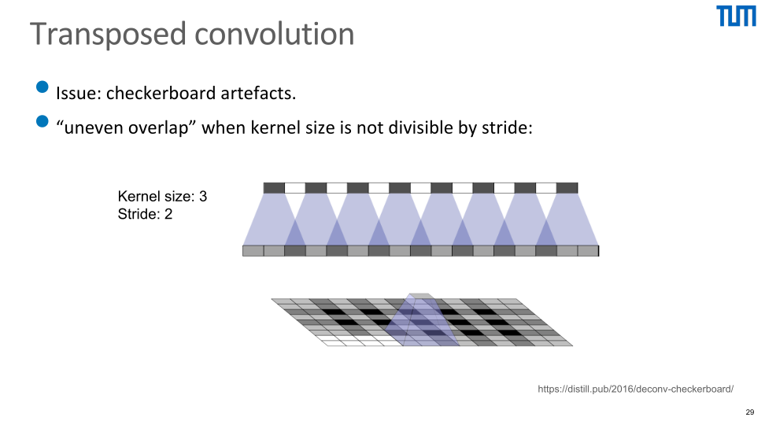
Resize-convolution
Transposed convolution需要careful parameterization，即使kernel和stride 选得合适（比如stride 2、kernel 4），boundaries仍然可能有问题。更好的 选择是interpolation（比如bilinear）followed by standard convolution。
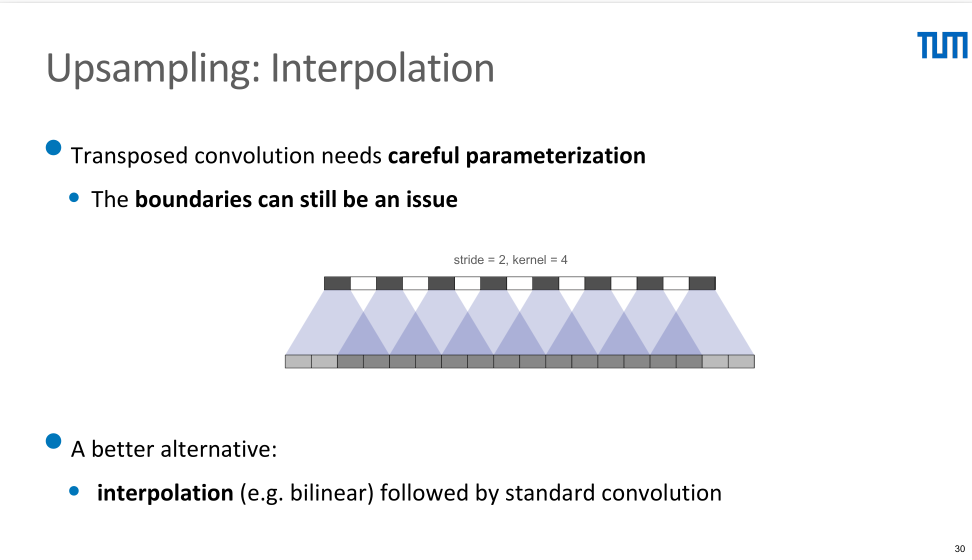
Feature可以像image一样interpolate：nearest neighbour、bilinear、bicubic。
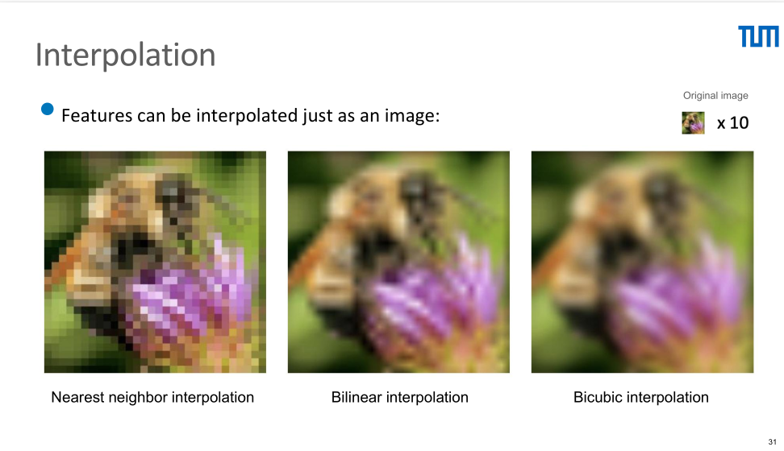
Resize-convolution = interpolate + convolution。下图的image reconstruction 例子里，transposed convolution的结果有明显的棋盘纹，resize-convolution没有。 不同层用deconv会产生不同frequency的artifact：最后两层用deconv有frequency 2 和4的artifact，只有最后一层用deconv有frequency 2的artifact，全部用 resize-convolution则没有artifact，而且在训练之前就是这样，说明这是结构 本身带来的问题。
不过即使upsampling做得好，downsampling时丢掉的信息还是丢了：一般来说 upsampling有多个plausible的结果。
Mitigating information loss: skip connections
高分辨率的信息从哪来？ 从encoder的前几层，通过skip connection接过来。 U-Net（Ronneberger et al., MICCAI 2015）是典型例子：encoder每次max pool 2×2下采样，decoder每次up-conv 2×2上采样，同分辨率的encoder feature map 通过copy and crop接到decoder，然后append（concatenate）到上采样的 feature上，即传递的是整个feature map。
Quiz: 我们已经见过的另一个例子？ 上一章的FPN（Feature Pyramid Network），它同样把高分辨率的bottom-up feature和上采样的top-down feature 合并。
另一种做法是SegNet（Badrinarayanan et al., TPAMI 2016）：不传整个feature map，只把encoder max pooling时的pooling indices传给decoder，decoder用 它做"unpooling"，把值放回原来的位置，再用conv填补。
Summary：
- Transposed convolutions：带可学习参数的upsampling，可能产生artefacts
- 更实用的是resize-convolution：先interpolate再convolve
- Skip connections：连接前面的高分辨率层，可能需要stage-wise training （先训练深层）
4. Instance segmentation
回忆两者的区别：semantic segmentation给每个pixel打label，包括背景（sky、 grass、road），但不区分同一类的不同instance；instance segmentation不给 uncountable的"stuff"打label，但区分同一类的不同instance。
两大类方法：
- Proposal-based：先得到proposals（比如bounding boxes），再对每个proposal 做segment and classify
- Proposal-free：先做semantic segmentation（可选），再把pixel group成 instances
4.1 Mask R-CNN
Proposal-based方法需要bounding boxes，而我们已经知道怎么得到它们了。所以 问题是：能不能把最好的object detector扩展成instance segmentation？ 从 Faster R-CNN出发，它有RPN、bounding box regression head和classification head。再加一个head，即"mask head"，就得到了Mask R-CNN（He et al., ICCV 2017）。
具体结构：RoI经过backbone得到\(7 \times 7 \times 1024\)，再经过res5得到 \(7 \times 7 \times 2048\)，这部分feature是object recognition head和 segmentation head共享的。Recognition head做average pooling后输出class和 box；segmentation head是一个conv-only的分支，输出\(14 \times 14 \times 256\) 再到\(14 \times 14 \times 80\)的mask，80是class数量，即每个class预测一张 mask。Mask loss是cross-entropy per pixel。
除了mask head，另一个新东西是RoIAlign。
4.2 The RoI rounding problem
回忆RoIPool：512×512的image经过CNN变成16×16的feature grid，predicted bounding box映射到feature grid上时坐标是分数。RoIPool做了两次quantisation：
- Bounding box alignment：把box的边界round到feature grid上
- Bin alignment：把box分成（比如2×2）bins时，bin边界也round到grid上
然后在每个bin里做pooling（max或average）。这对object detection足够好，因为 只用来classification；但mask prediction需要accurate localisation，两次 rounding带来的偏移会直接反映在mask边界上。
RoIAlign：
- No quantisation，box和bin的边界保持分数坐标
- 每个bin里定义4个regularly placed sampling points
- 每个sampling point的feature值用bilinear interpolation从周围4个grid point算出来
- 然后像之前一样aggregate每个bin（max或average pooling）
论文的ablation里RoIAlign比RoIPool的mask AP高约3个点，AP\(_{75}\)高约5个点， 说明proper alignment是RoI layer之间差距的主要来源。
Mask R-CNN看起来只是incremental的改进，整体设计很简单，但拿了CVPR 2017的 best paper award，效果见下面的qualitative results。
Mask R-CNN的后续改进：
- Kirillov et al., "PointRend: Image Segmentation as Rendering" (2020)
- Huang et al., "Mask Scoring R-CNN" (2019)
- Liu et al., "Path Aggregation Network for Instance Segmentation" (2018)
- Cai and Vasconcelos, "Cascade R-CNN: High Quality Object Detection and Instance Segmentation" (2019)
4.3 Coordinate-based networks: PointRend
问题：low mask resolution。Mask head的输出只有\(28 \times 28\)（或 \(14 \times 14\)），bilinear upsampling到原图之后边界是一块一块的。
为什么不给mask head加一个decoder？ 可以，比如Faster R-CNN w/ FPN的版本 把\(14 \times 14 \times 256\)上采样到\(28 \times 28 \times 256\)再输出mask。这确实 提高accuracy，但需要更多参数和计算。而且bilinear upsampling真正出问题的地方 主要在boundaries，即fine details，内部区域其实没问题。所以在整张mask上 均匀地加分辨率是浪费。
Coordinate-based neural representation：Mask head是把一个discrete signal representation（pixel）映射到一个desired value（binary mask）。PointRend （Kirillov et al., 2020）改成把mask参数化成一个continuous function，它的 输入是signal domain里的坐标\((x, y)\)：
\(f_\theta(x, y)\)是一个coordinate-based net。它有用的地方在于我们可以 query fractional coordinates，即任意分辨率都能问。
Remarks：
- 实际上是给每个坐标算一个point-wise feature，用bilinear interpolation 从feature map上采样
- 可以从多个feature map上采样再concatenate
- Point head \(f_\theta\)是在这些feature上训练的，不是在坐标值上
Quiz: 为什么不直接在坐标值上训练？ 因为坐标本身不包含任何image content， 只在坐标上训练的网络只能记住一个固定形状，不能泛化到不同物体。Point-wise feature带着这个位置的appearance信息，而且feature是translation-equivariant的， 所以head学到的是"这样的feature对应边界"，对所有RoI通用。
训练：focus on the boundaries。训练coordinate-based mask representation 时不均匀采样，而是把采样点集中在boundaries，即prediction不确定的地方。 Uniform sampling和boundary sampling之间的trade-off由hyperparameter控制。
测试：adaptive subdivision，用学到的coordinate mapping来refine boundaries。一次迭代：\(4 \times 4\)的initial mask，bilinear上采样2×到 \(8 \times 8\)，只在uncertain的点上query \(f_\theta(x, y)\)做point prediction， 得到refined \(8 \times 8\) mask。重复：\(28 \to 56 \to 112 \to 224\)，最终得到 边界清晰的高分辨率mask，而计算只花在边界上。
4.4 Proposal-free methods: SOLOv2
Proposal-free方法从一张semantic map出发，而我们已经知道怎么得到它（FCN）。
回忆semantic segmentation的最后一层是一个1×1 convolution，即一个linear classifier：
\(Y\)是pixelwise class scores，\(K\)是layer parameters（1×1 conv），\(X\)是features。 为什么不把同样的策略用到instance segmentation？ 问题是：kernel的数量不能 固定，因为一张图里有多少个instance是不确定的。
SOLOv2（Wang et al., 2020）的idea：predict the kernels。
- FCN提取feature \(I\)，然后分两个branch
- Kernel branch输出\(G: S \times S \times D\)，即把图划成\(S \times S\)的 grid，每个grid cell \((i, j)\)预测一个\(D\)维的kernel
- Feature branch输出\(F: H \times W \times E\)
- 每个grid cell的mask是一次convolution：\(M_{i,j} = G_{i,j} * F\)
- \(D\)取决于kernel size，1×1就够用，所以\(D = E\)
也就是说，落在grid cell \((i, j)\)里的物体由这个cell预测的kernel负责，kernel 和feature卷积得到它的mask。
一些细节：kernel branch同时预测一个\(S \times S\) grid的class distribution； class prediction不确定的kernel直接丢掉；最后对mask做NMS。
SOLOv2概念上非常简单，是semantic segmentation模型的自然扩展，而且又快又准： COCO mask AP和inference time的曲线上它全面压过Mask R-CNN、TensorMask、 YOLACT、PolarMask、BlendMask，mask的细节也更好。
其他proposal-free方法：
- Graph- or cluster-based：Silberman et al. "Instance Segmentation of Indoor Scenes using a Coverage Loss" (2012)；Liang et al. "Proposal-free Network for Instance-level Object Segmentation" (2015)；De Brabandere et al. "Semantic Instance Segmentation with a Discriminative Loss Function" (2017)； Kirillov et al. "InstanceCut: from Edges to Instances with MultiCut" (2017)； Bai and Urtasun "Deep Watershed Transform for Instance Segmentation" (2017)
- End-to-end deep nets：Bolya et al. "YOLACT++" (2019)；Chen et al. "TensorMask" (2019)；Chen et al. "BlendMask" (2020)；Lee et al. "CenterMask" (2020)；Xie et al. "PolarMask" (2020)；Wang et al. "SOLO" (2020) 和 "SOLOv2" (2020)
- Recurrent approaches：Romera-Paredes & Torr "Recurrent instance segmentation" (2016)；Ren & Zemel "End-to-end instance segmentation with recurrent attention" (2017)；Araslanov et al. "Actor-critic Instance Segmentation" (2019)。概念上有意思，可以利用之前prediction的context，但 计算量随instance数量线性增长，在物体很多的场景里表现不好
Instance segmentation summary：proposal-free和proposal-based提供的是 accuracy vs. efficiency的trade-off，结论和object detector类似：
- Proposal-based更准（对scale variation robust），但效率低
- Proposal-free更快，accuracy有竞争力，对large-scale objects的分割准确
5. Panoptic segmentation
Panoptic segmentation = semantic segmentation + instance segmentation。它给 uncountable的"stuff"（sky、road等）打label，像FCN类的网络一样；同时区分 同一类的不同instance，即countable的"things"（cars、pedestrians等）。
这个任务并不新：holistic scene understanding（Yao et al., 2012）和 image parsing（Tu et al., 2005）都在做类似的事，只是deep learning让它 变得可行。
Challenges：
- 能不能把预测"stuff"和"things"的architecture统一起来？Semantic和instance segmentation的pipeline差别很大
- 能不能通过parameter sharing提高计算效率？
两大类：
- Top-down：典型的是two-stage proposal-based
- Bottom-up：学一个适合grouping pixels的feature representation
Overview：Kirillov et al., "Panoptic Feature Pyramid Networks", CVPR 2019； Xiong et al., "UPSNet: A Unified Panoptic Segmentation Network", CVPR 2019； Cheng et al., "Panoptic-DeepLab", CVPR 2020；Li et al., "Fully Convolutional Networks for Panoptic Segmentation", CVPR 2021。
典型的early architecture（de Geus et al., 2018）：一个feature extractor （ResNet-50）后面接两个CNN，一个做semantic segmentation，一个做instance segmentation，最后combine成panoptic output。
5.1 Panoptic FPN
Panoptic FPN（Kirillov et al., CVPR 2019）把上面的框架具体化：
- Feature extractor：feature pyramid backbone（FPN）
- Instance segmentation：Mask R-CNN，在FPN的各个level上取RoI
- Semantic segmentation decoder：把FPN的每一层（1/32、1/16、1/8、1/4） 通过若干conv + 2×上采样都变成\(128 \times 1/4\)分辨率，然后逐元素相加，最后 conv + 4×上采样得到\(C \times 1\)的输出。这里把所有things classes换成一个 class "other"，因为things由instance branch负责
Merge things and stuff：
- 对instances做NMS
- Stuff和things冲突时in favour of things
- 去掉label为"other"或者面积很小的stuff regions
Loss function：
\(L_c\)、\(L_b\)、\(L_m\)是Mask R-CNN的classification、box、mask loss，\(L_s\)是 semantic segmentation的pixelwise cross-entropy，\(\lambda_s\)是trade-off hyperparameter。Remark：带多个loss term的训练（multi-task learning）可能 很challenging，因为不同loss对feature representation的要求可能会"compete"。
Panoptic FPN summary：
- 用simple heuristics合并things和stuff
- Instance和semantic两个branch是独立处理的，即semantic branch收不到 instance supervision的gradient，反之亦然
5.2 Panoptic FCN
什么样的feature是好的？ Countable的things偏好instance-aware的feature， uncountable的stuff偏好semantically consistent的feature。Panoptic FCN （Li et al., CVPR 2021）的key idea是：用generated kernels在一个fully convolutional pipeline里统一地表示和预测things和stuff。Kernel generator负责 生成kernel weights，feature encoder负责shared feature encoding。
这和SOLOv2是同一个思路：回忆SOLOv2用kernel branch为每个grid cell预测一个 kernel，和feature branch卷积得到mask。
Architecture：
- Backbone是FPN。每个single-stage feature \(X_i\)（\(C_i \times W_i \times H_i\)） 送入kernel generator；高分辨率feature \(F^h\)（\(C_e \times W/4 \times H/4\)） 送入feature encoder
- Kernel generator有两个head：
- Position head（3×conv）输出object centers map \(L_i^{th}\) （\(N_{th} \times W_i \times H_i\)）和stuff regions map \(L_i^{st}\) （\(N_{st} \times W_i \times H_i\)）
- Kernel head（+coord & 3×conv）输出kernels \(G_i\)（\(C_e \times W_i \times H_i\)）
- Kernel fusion把各level选出的kernel合成\(K\)，共\((M + N)\)个（\(M\)个things， \(N\)个stuff），每个\(C_e \times 1 \times 1\)
- Feature encoder（+coord & 3×conv）得到encoded feature \(F^e\) （\(C_e \times W/4 \times H/4\)）
- Prediction \(P = K \otimes F^e\)，输出\((M + N) \times W/4 \times H/4\)， 每个kernel卷出一张mask
Position head：localization and classification。通过两个branch分别生成 object centers的map和stuff regions的map。Object centers是heat map，表示每个 pixel是object center的likelihood（同CenterNet, Zhou et al., 2019）。Loss用 focal loss：
\(\mathbf{Y}_i^{th}\)是center keypoint heatmap，\(\mathbf{Y}_i^{st}\)是bilinear interpolated的segmentation masks。
Kernel head：predicts the kernel weights。先把\(i\)、\(j\)坐标作为两个额外 channel concatenate到feature上（\(c \to c + 2\)，即CoordConv），再过3×conv。 有了position head的预测之后，\(G_i\)里同一坐标上的kernel weights被选出来 代表对应的instance。ID怎么确定：things的kernel如果cosine similarity超过阈值 就合并成一个ID；stuff的kernel只要category相同就标为同一个ID。
结果：在MS-COCO val上的PQ vs latency曲线里Panoptic FCN同时超过box-based （Panoptic FPN、UPSNet）和box-free（Panoptic-DeepLab、DeeperLab）的方法， efficiency和accuracy都更好，architecture更简单。
5.3 Evaluating panoptic segmentation
Panoptic Quality（PQ）（Kirillov et al., "Panoptic Segmentation", CVPR 2019）。 看例子：ground truth里有三个person、一只dog，prediction里有三个person（其中 一个把两个person合并了，dog的位置预测成了person）。对person这个class： TP是两对匹配上的segment，FN是被漏掉的那个person，FP是dog位置上多出来的person。
不需要定义IoU threshold吗？ 需要。PQ规定prediction和ground truth match当且仅当IoU > 0.5，而且这个match如果存在就是unique的。
Matching theorem：每个ground-truth segment最多和一个prediction的IoU大于 0.5。Proof hint：如果\(p_1\)、\(p_2\)不相交，那么 \(\text{IoU}(p_1, g) + \text{IoU}(p_2, g) \le 1\)，所以不可能两个都超过0.5。 这就是为什么panoptic里的segment互不重叠这个性质让matching变得简单，不需要 像detection那样处理多个候选。下图的cat例子里，几个competing的predictions 只有IoU = 0.6的那个能匹配上。
计算步骤：
- "Match" ground truth和predictions
- 数TPs、FPs和FNs
- 对每个class计算
- 然后across classes取平均
两个因子：
- SQ（Segmentation Quality）：true positives的平均mask IoU，衡量predicted masks的pixel-level accuracy。看起来很眼熟，因为它和MOT里的MOTP \(= \frac{\sum_{t,i} \text{IoU}_{t,i}}{\sum_t TP}\)是一回事
- RQ（Recognition Quality）：object-level accuracy。它就是F-score （\(F_1\)），即precision和recall的harmonic mean
Observation 1：\(PQ, RQ, SQ \in [0, 1]\)。
Observation 2：漏掉一个物体对PQ有什么影响？ 比如上面把dog预测成person： dog这个class多一个FN，同时person这个class多一个FP，所以两个class的PQ 都下降。常见的trick是把不确定的预测标成"unknown" class，这样FP不会 影响别的class。
Dealing with unknown：
- Predicted segment里所有在ground truth中标为"void"的pixel会从prediction中 移除，不参与IoU计算
- Matching之后，unmatched的predicted segments如果包含的void pixel比例超过 matching threshold，就被移除，不算FP
- Output里也可以有void pixel，它们不影响evaluation
Further reading。CNN类：Xiong et al., "UPSNet" (CVPR 2019)；Wang et al., "Axial-DeepLab" (ECCV 2020)；Wang et al., "MaX-DeepLab" (CVPR 2021)。 Transformer类（课程后面会讲）：Cheng et al., "Masked-attention Mask Transformer for Universal Image Segmentation" (Mask2Former, CVPR 2022)，一个universal architecture，在panoptic、instance、semantic三个任务上都超过了各自的 specialized SOTA。
6. Video object segmentation
前面两章的关系可以这样看：object detection在时间维度上延伸就是object tracking，object segmentation在时间维度上延伸就是video object segmentation（VOS）。
Goal：为视频里的物体生成accurate and temporally consistent的pixel masks。挑战有strong viewpoint / appearance changes、occlusions、scale changes、illumination、shape变化等等。
我们需要两类模型：
- Appearance model：assumption是constant appearance；input是1帧；output 是segmentation mask
- Motion model：assumption是smooth displacement和brightness constancy； input是2帧；output是motion，即optical flow
Advanced的方法会同时利用两者。
6.1 One-shot (semi-supervised) vs zero-shot (unsupervised) VOS
VOS有两种task setting：
- "Semi-supervised"（one-shot）VOS：inference时输入video加上第一帧的 object mask，目标是把这个物体在整个视频里分割出来。这节课主要讲这个 setting，重点在temporal consistency
- "Unsupervised"（zero-shot）VOS：inference时只有video，没有任何label， 模型自己决定要分割什么
Semi-supervised VOS的task formulation：Given target object(s)在第一帧的 segmentation mask，Goal是整个视频的pixel-accurate segmentation。这样把 "what to track"和实际的tracking隔离开了，所以它常被用作pixel-level tracking的benchmark。
What to track? 选择要跟踪的物体可能是subjective的，尤其是online的 情况：赛车场上是跟车还是跟人？舞台上跟舞者还是观众？Offline tracking因为能看 整个视频，可能给出更好的线索，比如基于object permanence。
6.2 Motion-based VOS: optical flow
Recap: optical flow
回忆Computer Vision I里的optical flow：a pattern of apparent motion （Lucas and Kanade, 1981; Horn and Schunck, 1981）。给定\(t\)和\(t+1\)两帧， optical flow estimation输出一个2D vector field，把第\(t\)帧按这个field做 （forward）warping就得到第\(t+1\)帧。
Minimise brightness difference：对一个区域\(R\)，找位移\((u, v)\)最小化
brightness是空间\((u, v)\)和时间\(t\)的函数。
这背后有三个assumption：
- Brightness constancy：一个小区域里的image measurements（brightness） 保持不变，\(I(x + u(x, y), y + v(x, y), t + 1) = I(x, y, t)\)，其中\(u\)是 horizontal motion、\(v\)是vertical motion
- Spatial coherence：场景里相邻的点通常属于同一个surface，所以通常有相似 的3D motion
- Temporal persistence：一个surface patch的image motion随时间gradually 变化
推导（Lucas-Kanade）。对\(I(x + \Delta_x, y + \Delta_y, t + \Delta_t)\)做 first-order Taylor approximation：
\(\epsilon\)是approximation error。代入\(E_{\text{SSD}}\)（\(\Delta_x = u\)， \(\Delta_y = v\)，\(\Delta_t = 1\)）：
对\(u\)和\(v\)求导并令其为零：
整理得到2个方程2个未知数的线性系统：
左边的矩阵是structure tensor，它是positive definite的，所以可逆：
这就是经典的Lucas-Kanade method（B. D. Lucas and T. Kanade, IJCAI 1981）。 它有很多扩展，比如Horn-Schunck引入了global smoothness。
Motion segmentation：有了flow之后，一些物体可以直接基于运动分割出来， 比如骑车的人和走路的人运动方向不同。
Limitations of optical flow：
- 它是"perceived"的2D motion，不是物体真实的运动
- Aperture problem：如果一个一维结构（比如一条边）比image frame还大，而 它的端点都不在observation window（aperture）里，就无法测量真实的image motion，只能测到与该结构正交的分量。经典例子是理发店旋转灯柱：真实 运动是水平旋转，看到的却是条纹向下移动
另外两个工程上的点：
- 以前optical flow很慢，640×480的image pair在CPU上要约80秒
- 可视化：画成箭头会很乱，所以常用color coding，颜色代表方向、饱和度代表 幅值
Can we do VOS with optical flow?
Object Flow（Tsai et al., "Video Segmentation via Object Flow", CVPR 2016）把segmentation和optical flow estimation联合建模：
- 从initial optical flow出发，motion boundaries indicate potential object boundary，用它update object mask
- 反过来，object boundaries indicate motion discontinuities，用mask update optical flow
- 两者交替迭代
问题是：slow to optimise（runtime最多20秒，还不算optical flow本身）， 而且initialisation matters，需要一个还算准确的initial optical flow。 DL to the rescue?
Optical flow with CNNs: FlowNet
FlowNet（Fischer / Dosovitskiy et al., ICCV 2015）用CNNend-to-end supervised地学optical flow：输入两帧，输出flow field。
Architecture 1（FlowNetS, "simple"）：把两张图stack起来，输入变成 2 × RGB = 6 channels，接一个普通的encoder（conv1到conv6），再接一个 refinement模块（upconv加skip connections，逐级上采样）输出flow。用 L2 loss在synthetic data上训练。
Quiz: 为什么用synthetic data？ 训练集是Flying Chairs：把渲染的椅子 随机贴在背景图上再做随机变换。原因是真实视频几乎不可能标注dense的 ground-truth flow（每个像素一个精确的2D位移），而synthetic data的flow是 精确已知的，而且想要多少有多少。Synthetic data现在很流行，比如 SURREAL（Synthetic hUmans foR REAL tasks）和BEDLAM（Black et al., CVPR 2023）。
Architecture 2（FlowNetC, "correlation"）：Siamese architecture， 两张图分别过同一套conv1到conv3，然后的key design choice是how to combine the information from both images。答案是correlation layer。
Correlation layer：给两个feature tensor \(F_1\)、\(F_2\)（\(h \times w \times c\)），flatten成\(hw \times c\)，计算pairwise dot-product \(s_{ij} = f_i \cdot f_j\)，得到一个\(hw \times hw\)的matching score。Dot product 衡量两个feature的similarity。注意这是一个fixed operation，没有learnable weights。（实际实现里只在一个local neighbourhood里算，否则太大。） Correlation layer对找image correspondences很有用，比如Rocco et al.（CVPR 2017）用它做geometric matching，估计从image A到image B的transformation。
SegFlow
SegFlow（Cheng et al., ICCV 2017）用一个网络联合估计optical flow和 object segment：上面是segmentation branch（ResNet，frame \(t\)），下面是 flow branch（FlowNetS风格，frame \(t\)和\(t+1\)），两个branch在多个scale上 交换feature，即joint feature representation at multiple scales。两个 任务的supervision need not be synchronised，即segmentation的标注和flow 的标注可以来自不同数据。训练用alternating optimisation：固定一个网络 优化另一个。
Motion-based VOS小结：
- 现在我们能以low latency得到准确的optical flow
- 但naively把optical flow用于dense tracking收益有限，因为有严重的 (self-)occlusions、illumination changes等等
- 在semi-supervised VOS（dense tracking）里这仍然是active research area
6.3 Appearance-only VOS
Main idea：用已有的annotation（包括第一帧）训练一个segmentation model， 然后独立地应用到每一帧。
OSVOS
One-Shot VOS（OSVOS）（Caelles et al., CVPR 2017）把训练分成三步：
- Pre-training：base network在ImageNet上预训练，学到edges和basic image features
- Training：parent network在DAVIS training set上训练，学会如何做video segmentation（"objectness"）
- Fine-tuning：test network在test sequence的第一帧上fine-tune，学会 which object to segment
"One-shot"指的就是从一个example（第一帧）学会分割整个sequence，这发生在 fine-tuning step：模型learns the appearance of the foreground object。 Fine-tune之后每帧独立处理，所以没有temporal information；fine-tuned的 参数在处理下一个视频前会被丢弃。
OnAVOS
问题：物体的appearance会因为物体本身和camera pose的变化而变化，只在第一帧 上fine-tune不够。一个想法是用pseudo-labels让模型adapt到整个视频。
OnAVOS（Online Adaptation VOS）（Voigtlaender and Leibe, BMVC 2017）： 在每一帧上adapt模型，不只是第一帧。流程是：用frame 1初始化annotated samples；对new frame做prediction；select confident pixels作为pseudo-label 加入annotated samples；再fine-tune segmentation model。下图里蓝色是 background samples、红色是foreground samples。
- OnAVOS比OSVOS更准，因为不是在单个样本上fine-tune，而是在一个动态的 pseudo-label集合上
- 但pseudo-label可能不准，所以它的收益会随时间递减
- Drawback：慢
MaskTrack
一个反过来的思路：用正确的signal来fine-tune模型。MaskTrack（Perazzi et al., "Learning Video Object Segmentation from Static Images", CVPR 2017） 的输入是当前帧\(t\)加上上一帧的mask estimate \(t-1\)，输出refined mask \(t\)。
关键是training inputs can be simulated：
- 把一张标注好的static image的mask当作ground truth
- Perturb the mask：affine transformations、non-rigid deformation
- 让网络学会从perturbed maskrecover原始mask
这和Faster R-CNN里用displacement训练box regressor、以及Lecture 4的 Tracktor在精神上非常相似：都是把"上一帧的估计"当作输入，让网络学会 refine。因为训练只需要static images，所以标题叫"from static images"。
Summary of appearance-based models：
- Advantages：可以在static images上训练；能很好地从occlusion中恢复；概念上 简单
- Disadvantages：没有temporal consistency；test time可能很慢，因为需要adapt
6.4 Metric-based approaches: pixel-wise retrieval
Idea：学一个pixel-level embedding space，其中两个feature vector的 proximity是semantically meaningful的。
- Training：用triplet loss把foreground pixels拉近、把它们和 background pixels分开
- Test：把annotated frame和test frame的pixels都embed，对test pixels做 nearest neighbour search
Pixel-wise retrieval（Chen et al., "Blazingly Fast Video Object Segmentation with Pixel-Wise Metric Learning", CVPR 2018）：embedding network 由base feature extractor和embedding head组成，reference image和test image 都映射到embedding space，用user input标记reference里的foreground pixels， 再用nearest neighbour classifier给test pixels分类。User input可以是任何 形式：first-frame ground-truth mask、scribble等等。
Advantages：
- 不需要为每个sequence重新训练或fine-tune模型，所以快
- 可以用unsupervised training学到有用的feature representation，比如 contrastive learning（课程后面会讲，比如Jabri et al., "Space-Time Correspondence as a Contrastive Random Walk", NeurIPS 2020）
References
- Shi & Malik. Normalized Cuts and Image Segmentation. TPAMI 2000.
- Comaniciu & Meer. Mean Shift: A Robust Approach Toward Feature Space Analysis. TPAMI 2002.
- Krähenbühl & Koltun. Efficient Inference in Fully Connected CRFs. NeurIPS 2011.
- Long et al. Fully Convolutional Networks for Semantic Segmentation (FCN). CVPR 2015.
- Yu & Koltun. Multi-Scale Context Aggregation by Dilated Convolutions. ICLR 2016.
- He et al. Mask R-CNN. ICCV 2017.
- Kirillov et al. PointRend: Image Segmentation as Rendering. CVPR 2020.
- Kirillov et al. Panoptic Segmentation. CVPR 2019.
- Kirillov et al. Panoptic Feature Pyramid Networks (Panoptic FPN). CVPR 2019.
- Li et al. Fully Convolutional Networks for Panoptic Segmentation (Panoptic FCN). CVPR 2021.
- Dosovitskiy et al. FlowNet: Learning Optical Flow with Convolutional Networks. ICCV 2015.
- Cheng et al. SegFlow: Joint Learning for Video Object Segmentation and Optical Flow. ICCV 2017.
- Caelles et al. One-Shot Video Object Segmentation (OSVOS). CVPR 2017.
- Voigtlaender & Leibe. Online Adaptation of Convolutional Neural Networks for VOS (OnAVOS). BMVC 2017.
- Perazzi et al. Learning Video Object Segmentation from Static Images (MaskTrack). CVPR 2017.
- Jabri et al. Space-Time Correspondence as a Contrastive Random Walk. NeurIPS 2020.
Comments